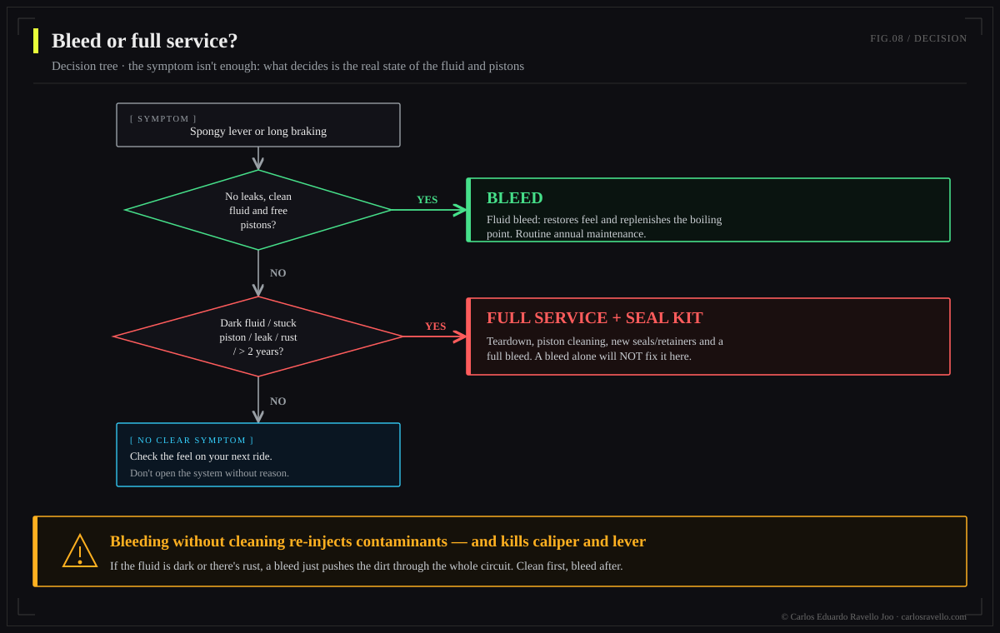

A bleed replaces the fluid and removes air with the brake assembled: it fixes a healthy brake with old fluid or a little air. It does not clean the grime stuck to walls, pistons and seals. If the system is contaminated or the pistons are stuck, bleeding helps for a while and the problem returns —because you treated the symptom, not the cause—. That calls for a full service: open the caliper, clean pistons and seals, inspect the master cylinder, and only then refill. Rule: if you bled it well and it's still soft or rubbing, the problem is in the hardware, not the fluid.
This is the service chapter of the Hydraulic Brake Encyclopedia. It's the costliest confusion in the workshop: a rider shows up with a spongy brake, gets "a bleed," it feels better… and two weeks later it's back. They didn't bleed it wrong. The problem was never the fluid.

What each operation actually does
| Bleed | Full service | |
|---|---|---|
| What it does | Changes fluid and removes air | Disassembles, cleans, rebuilds |
| Caliper opened | No | Yes |
| Pistons cleaned | No | Yes |
| Seals inspected/replaced | No | Yes |
| Fixes old fluid / air | Yes | Yes |
| Fixes stuck pistons | No | Yes |
| Fixes degraded seals | No | Yes |
| Typical time | 20-30 min | 1-2 h |
Why bleeding over dirt doesn't work
Fresh fluid flows in and out of the passages, but it doesn't scrub the walls or dislodge the deposits caked onto the pistons. Picture rinsing a greasy glass with clean water: the water runs cloudy for a moment and the glass stays greasy. In the brake, that "grease" is emulsified water, heat-degraded fluid, pad particles and micro-corrosion. It stays there, and the pistons —which must slide freely— remain dragged by the grime.
If someone used the wrong fluid (DOT in a mineral system or vice versa), the seals swell or dissolve. No bleed reverses that: the system needs a rebuild with the correct seal kit. Same with corroded pistons or a damaged master cylinder. Bleeding blindly there wastes fluid and time. See DOT vs mineral oil.
The decision tree: bleed or full service?
Before touching anything, diagnose. This is the criterion we follow in the workshop:

Signs a bleed is enough
A slightly spongy lever that firms up when pumped; fluid still translucent; pistons retracting well; the interval has passed (DOT 6-12 months, mineral 12-24). Here the fluid is the culprit and a bleed fixes it.
Signs you need a full service
A lever that sinks despite correct bleeds; rub that won't clear and pads contacting asymmetrically (stuck piston); a wandering bite point; dark, milky or particulate fluid; bite lost under heat faster than normal. Here the problem is hardware: open, clean, evaluate seals.
A well-executed bleed that doesn't hold is a diagnosis, not a failure: it's telling you the fault is in the pistons or seals. The second bleed won't fix it; the full service will.
What a proper full service includes
The caliper and pads come off; the pistons are gently pushed out and removed; each piston and its bore is cleaned; the seals are inspected (replaced if swollen, stiff or marked); the master cylinder and reservoir are cleaned; it's reassembled with fresh, sealed, correct fluid for the brand; and bled at the end with full technique. The bleed is the last step, not the only one.

Intervals
Bleed: DOT every 6-12 months, mineral every 12-24. Full service: every 2-3 years or at the first hardware symptom. In wet climates, frequent rain or long descents, shorten the windows.
BikeLab Studio.
Frequently Asked Questions
Does bleeding clean the brake inside?
No. Bleeding replaces the fluid and removes air, but carries away very little of the grime stuck to walls, pistons and seals. If the system is contaminated or pistons are stuck, bleeding helps briefly and the problem returns. That requires a full service: disassemble, clean and, if needed, replace seals.
What is the difference between a bleed and a full service?
A bleed changes the fluid and removes air with the brake assembled. A full service opens the caliper, cleans the pistons, inspects/replaces seals, cleans the master cylinder and only then refills with fresh fluid. A bleed treats the symptom; the full service, the cause.
Why is my brake still spongy after bleeding?
Stuck pistons, degraded seals, air trapped by incomplete technique or the wrong fluid. None is solved by another bleed: you must open and diagnose. If you bled it well and it's still soft, the problem is in the hardware.
How often should I bleed and how often a full service?
Bleed: DOT 6-12 months, mineral 12-24. Full service: every 2-3 years or at hardware symptoms (slow pistons, persistent rub, lever sinking despite bleeds, contaminated fluid). In wet climates or heavy use, sooner.
Are there brakes that truly can't be bled?
Yes: seals dissolved by the wrong fluid, corroded pistons or a damaged master cylinder won't be fixed by bleeding. There a bleed is useless; the system needs a rebuild with the correct seal kit or replacement. That's why you diagnose first.
References
- Park Tool — Hydraulic Disc Brake Service.
- Shimano / SRAM — caliper service and bleed manuals (procedure and seal kits).
- GMBN / Pinkbike — diagnosing a spongy lever and stuck pistons.
- BikeLab Studio — DOT vs mineral oil (seal compatibility).